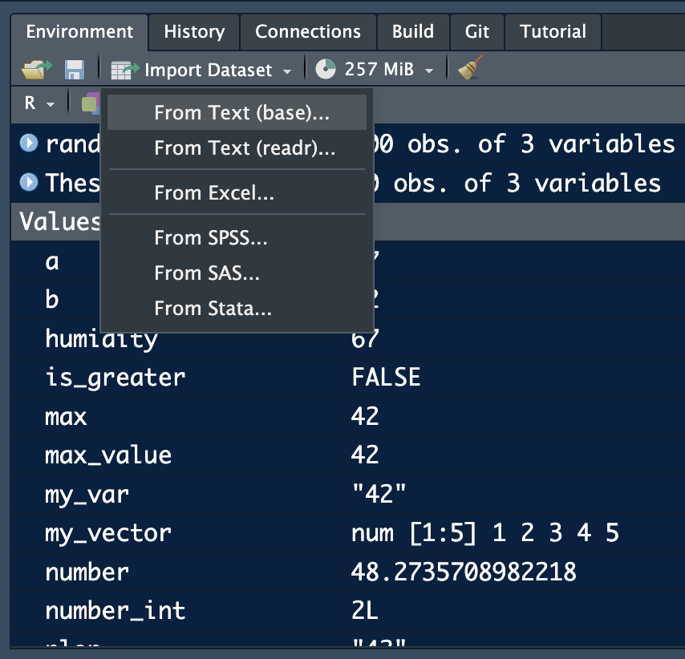
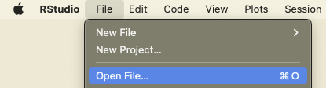
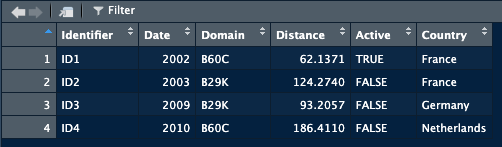
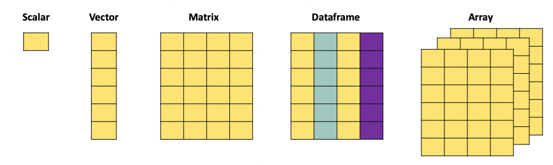
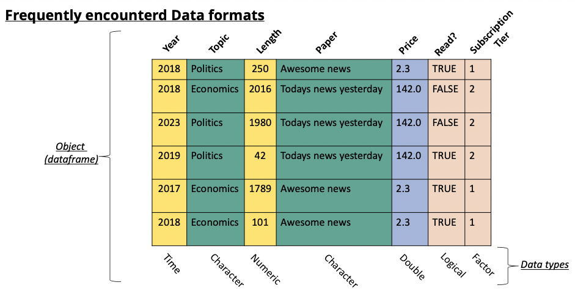
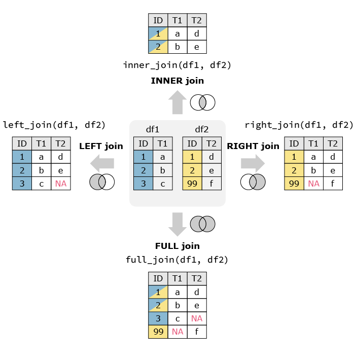

# In R the if statement checks the condition between () and runs the code between {}
x <- 42
if(x > 20){print("x is higher than 20")}[1] "x is higher than 20"# since x > 20, this code will print "x is higher than 20"| R | Example R | |
|---|---|---|
| Import Data (csv, txt, json, xls) | read.csv() | |
| Create a dataframe and list | dataframe(“a” = 2, “b” = 3) | |
| Create a matrix and vector | m <- matrix(nrow = 2, ncol = 3, 0) | |
| Remove columns | m <- m[, -1] | |
| Extract columns | select | |
| Merge | left_join() | |
| Export data | write.csv2(data, “export.csv”) | |
| Subset a dataframe | subset() | |
| Use if, else, elif | if(){} | |
| group | group_by | |
| summarise | group_by() %>% summarise | |
| filter | filter(Domain) |
We are often faced with a situation in which we need to check if something a certain condition is met before we proceed with the next action. For example, a coffee machine should only run the water if the temperature reaches a certain level. A ticket should only be issued if the car exceeds a certain speed. A map should show red if pollution levels exceed a specific threshold. The key word in all these examples is if. In algorithms this is a terms we use the check for specific conditions, and it translates directly to both R and Python.
An if statement checks a condition that we supply and only runs the code if the condition is true.

# In R the if statement checks the condition between () and runs the code between {}
x <- 42
if(x > 20){print("x is higher than 20")}[1] "x is higher than 20"# since x > 20, this code will print "x is higher than 20"You can put any length of code after the if statement, and you can also use multiple if statements:
# In R the if statement checks the condition between () and runs the code between {}
x <- 42
y = 21
if(x > 20){
if(y > 10){
print("x is higher than 20, y is higher than 10")
}
}[1] "x is higher than 20, y is higher than 10"# since x > 20 and y > 10, this code will print : "x is higher than 20, y is higher than 10"
# NOTE: indentation is not required in R, but it does make the code more readable!The if statement checks one condition, this means that if the condition is true, we run code, if it’s false we don’t. However, in many cases we would like to have different action when the condition is true or false. For example, if we grade students, we want a result to be “admitted” if the grade is >= 5.5 and “failed” when the grade is lower. This is where the if else statement can be used. In essence, this statement checks if the condition is true, run the code, if the condition is not true. It runs a different line of code:
# In R, the else statement is added right after the if code to run of the condition is true
grade <- 6.8
if(grade >= 5.5){ # Checks if the grade is higher than 5.5
print("Admitted") # if the garde is higher than 5.5 we print "Admitted"
}else{ # if the grade is not higher than 5.5 we print "Fail"
print("Fail")}[1] "Admitted"We can of course complicate things even more, by combining multiple if statements. In R this reduces to simple combining multiple if statements. In Python there is a specific operator for this: elif:
# In R, the else statement is added right after the if code to run of the condition is true
# Using if-else if-else statement
z <- 7
if (z > 10) { # we check the first condition, if this is true, then we print
print("z is greater than 10")
} else if (z > 5) { # if the first condition is false, but the second one is true then we print:
print("z is greater than 5 but not greater than 10")
} else { # if both are false, then we print:
print("z is not greater than 5")}[1] "z is greater than 5 but not greater than 10"For the import of data from txt, csv or tsv formats we will use the read_delim() function from the readr package. The main difference between these data formats resides in the separator of the data. For txt data, this is often undefined and needs to be specified by the user. The main arguments of the read_delim() are the file and the separator. The separator is the character string that defines where a line should be cut. For example, if our raw data looks like this:
Year;Class;Value
2002;B60C;42
2003;B29K;21
2009;C08K;12
Then we see that each column is separated by a “;”. By splitting the data whenever there is a “;” we create the following dataframe:
| Year | Class | Value |
|---|---|---|
| 2002 | B60C | 42 |
| 2003 | B29K | 21 |
| 2009 | C08K | 12 |
Separators that we commonly find in data are the semicolon: “;”, the comma: “,”, the vertical bar (or pipe) “|”, the space **” “, and tabs which are coded with**”\t”.
Even though csv stands for Comma Separated Values, this does not mean that the separator is always a comma, often enough it is in fact a semicolon. Always check your data to make sure you have the right one.
In R we can use the Rstudio interface to import certain data format:

The readr options allows for the import of csv, tsv and txt files. From excel allow you to import excel files without having to write code.
If we want to make our scripts easier to run and re-run. We prefer having the loading code in the script. This requires us to specify the path to the datafiles. R and Python can only find the files if you specify where to find them on you hard drive.
If your datafiles are in the same folder as your script, then you only have to write the name of the file you want to load. If the data is somewhere else, you will need to specify where by supplying the path to the data. On windows a path will look something like “C://Myname/Folder/otherFolder/”. This tells R/Python that the file you want to load is located on disc C, in a folder called “otherFolder” which is locates in the folder “Folder” which is itself located in the folder “Myname”.
The easierst way to load data is to ensure that it is either in the same folder as the script, or in a folder in the same folder as the script. Call this folder “Data” and you can then load the data by using the path: “Data/myfile.csv” for example.
library(readr)
# csv and various other separators
data <- read_delim("Data/myfile.csv", delim = ",")
data <- read_delim("Data/myfile.csv", delim = "|")
data <- read_delim("Data/myfile.csv", delim = ";")
# txt (space separated values)
data <- read_delim("Data/myfile.csv", delim = " ")
# tsv (tab separated values)
data <- read_delim("Data/myfile.csv", delim = "\t")Excel files can also easily be imported into R with the the readxl package.
library(readxl)
read_excel("sample_data.xlsx")# A tibble: 5 × 3
Pat_num Year Domain
<chr> <dbl> <chr>
1 WO200214562 2002 B60C
2 WO2023738962 2023 B60C
3 EP2023778962 2023 B29D
4 FR2019272698 2019 C08K
5 FR201922671 2019 C08K R has its own data format: .rdata. Any object that was created in R can be exported as .rdata (networks, dataframes, visuals) using the save() function:
df <- data.frame("ID" = c(1,2,3,4,5), "Value" = c(34,24,83,21,10))
save(df, file = "MyAwesomlyAmazingDataFrame.rdata")This format is very efficient for larger data sets and manages to reduce the space they take on the hard drive significantly.
Loading this type of data is quite easy. You can either load it from the mene via the “Open File…” option.

Or load it with the load function directly in your script:
# use import function in rstudio, or double click
load("MyAwesomlyAmazingDataFrame.rdata")library(jsonlite)
# Specify the path to the JSON file
json_file <- "example_1.json"
# Import the JSON file
data <- fromJSON(json_file)
# Display the imported JSON data
print(data)$fruit
[1] "Apple"
$size
[1] "Large"
$color
[1] "Red"jsonl files are a list of json files. We find this format for exampl in the lens.org database. Since each row is a json, we first read the files as text files and then apply the fromJSON function to extract the information. The result is a list of data objects.
library(jsonlite)
tmp<-readLines("data_test.jsonl")Warning in readLines("data_test.jsonl"): incomplete final line found on
'data_test.jsonl'tmp <- lapply(tmp, jsonlite::fromJSON)In most data analysis tasks we work with real world data. This data often takes the form of data tables (think of an excel sheet with columns and rows). When we import this data into R we create an object that contains this data in a format similar to an excel sheet. Usually, there are columns with names and each row is an observation. This structure is referred to as a data frame. The data that you loaded in the previous exercise also takes this form. The data frame is the main object that we work with in data analysis.
A dataframe has particular characteristics, it has column names that we can use, and the data it contains can vary in nature (a column with text, a column with numbers, and so on):

This is the preferred format in data analysis.
An alternative, that often looks visually identical, but is quite different, is the matrix. While the dataframe is a specific structure to arrange data, a matrix is a mathematical object. This means that we can perform mathematical operations on it (matrix multiplication, inversion). Different functions in R will sometimes require a matrix and sometimes a dataframe (or accept both).
While a matrix can technically contain any type of data, it’s best practice to only fill a matrix with numeric data. This allows all matrix operations to run without problems.
In R we create a dataframe by specifying the names of the columns and then the data we want in each column. The data.frame() function allows us to create the dataframe and takes as argument the name of the column and the data:
data <- data.frame(Identifier = c("ID1", "ID2", "ID3", "ID4"), Date = c(2002, 2003, 2009, 2010))This creates a dataframe called data with two columns, a first called “Identifier”, a second called “Date”. There will be 4 rows in this data frame.
When data is loaded into R using one of the functions we saw previously, most of the time the data will be loaded as a data frame. To make sure you have the right format, use the class() function to check which format it is. This is especially useful when you need to supply a specific data format to a function.
class(data)[1] "data.frame"A dataframe can be transformed into a matrix:
m <- as.matrix(data)
m Identifier Date
[1,] "ID1" "2002"
[2,] "ID2" "2003"
[3,] "ID3" "2009"
[4,] "ID4" "2010"In most cases, when you load data from a csv/xls/tsv/json file have the dataframe class when loaded into R.
An empty matrix is created by specifying a number of rows and columns (the dimension of the matrix):
m <- matrix(nrow = 3, ncol = 4, 42)
m [,1] [,2] [,3] [,4]
[1,] 42 42 42 42
[2,] 42 42 42 42
[3,] 42 42 42 42If we have information on the numbers we want to see inside the matrix we can use a vector of values to create the matrix:
m <- matrix(c(1,2,3,4,5,6,7,8,9), ncol = 3, byrow = T)A matrix can be transformed into a dataframe:
df <- as.data.frame(m)Lists look similar to vectors but they are more versatile. A list can contain any type of object. We can make a list of matrices, a list of graphs, a list of lists etc. While their use might seen enigmatic for now, they are often more memory efficient than large dataframe, especially when we need to combine lots of data.
A list is created with the list() function:
plop = list() # this creates an empty list
# we can also create a list with all the date we have previously loaded
plop = list(csv_file, txt_file, json_file)Once we have a list we refer to the elements contained in it using brackets, similar to matrices:
# if we want to extract the value in the second position in the list we use double brackets
element_2 = plop[[2]]
class(plop[[2]]) # this will show you the class of the object
# if you use simple brackets, you will get a list with only the second element
class(plop[2])While base-R allows for almost all dataframe manipulations, we will use a package specifically designed for these tasks. The packages makes many operations easier by offering a set of functions with names that are quite clear about what they do (filter, group_by, summarise, select). The package is called tidyverse. Start by installing and loading the package.
When working with data, we face different data object types. In practice we will mainly use the following formats:

A scalar is just a numerical value.
scalar_example <- 4When we combine multiple of these values, we can create a vector. The c() function is used to combine different values into a vector:
vector_example <- as.vector(c(4,2,3,1,6))
print(vector_example)[1] 4 2 3 1 6A matrix, just as the mathematical object, is an aggregation of vectors.
matrix_example = matrix(c(1,2,3,4,5,6,7,8,9,10,11,12), nrow = 3, ncol = 4, byrow = T)
print(matrix_example) [,1] [,2] [,3] [,4]
[1,] 1 2 3 4
[2,] 5 6 7 8
[3,] 9 10 11 12A dataframe is the more versatile than a matrix since it can contain different types of data. It also has column names that we can refer to when manipulating the object, and can have row names.
dataframe_example <- data.frame(
Name = c("Alice", "Bob", "Charlie", "David", "Eve"),
Age = c(25, 30, 22, 28, 24),
Gender = c("Female", "Male", "Male", "Male", "Female"),
Subscribed = c(TRUE, FALSE, TRUE, TRUE, FALSE)
)
print(dataframe_example) Name Age Gender Subscribed
1 Alice 25 Female TRUE
2 Bob 30 Male FALSE
3 Charlie 22 Male TRUE
4 David 28 Male TRUE
5 Eve 24 Female FALSE
When we download data from the internet to work with, this data is loaded into R and stored in either a matrix or a dataframe.
The selection of rows and columns can be achieved in two ways. Either by selecting the name of the column using the $ operator. Or by referencing the column number using [,]. Best practice is to use the $ operator.
The brackets have as first argument the row number(s) and as second argument the column umber(s). For example if you want to select the first row you would use [1,]. When no argument is supplied (as is the case here for the columns) then all columns are selected. For this reason [1,] gives the first row for all the columns. We can go further and search for the first row and only the first two columns, then we would write [1,c(1,2)].
# select the column by its name: "Name"
Name <- dataframe_example$Name # creates a new object with only the Name column of dataframe_example
# select the column by its index:
Name <- dataframe_example[,1] # creates a new object with only the Name column of dataframe_exampleThe $ operator only works when the column has a header. Matrices do not have a header and therefor cannot be subsetted with the $ operator, only the [,] method works.
# select the column by its index:
matrix_example[,1][1] 1 5 9# select a row by its index:
matrix_example[1,][1] 1 2 3 4# select multiple rows by their index:
matrix_example[c(1,3),] [,1] [,2] [,3] [,4]
[1,] 1 2 3 4
[2,] 9 10 11 12# select multiple columns by their index:
matrix_example[,c(2,4)] [,1] [,2]
[1,] 2 4
[2,] 6 8
[3,] 10 12We often want to compute values and add them to our dataframe. Imagine we have a dataframe with countries and population and the money spend each year on fuel We could want to compute the average fuel consumption per country by dividing the fuel by the population. It would make sense to add this information to the same dataframe.
In a dataframe we refer to columns with the “$” symbol. We can use the same to create a new column in a dataframe:
Data$new_column <- Fuel_consumption / PopulationThis creates a new column, called “new_column” in the Data dataframe. The values in this column will be Fuel_consumption / Population. By default R will divide rowwise.
For matrices this does not work, as we know columns in matrices cannot be referred to with the “$”. To add a column to a matrix we use the cbind() function.
average_consumption <- Fuel_consumption / Population
Data <- cbind(Data, average_consumption)It is possible to add as many arguments as you want in the cbind() function.
We often need to subset datasets to suit specific needs. This means that we want to extract rows and columns from a dataset based on specific conditions. For example, we might want to extract all papers published in a specific year, from authors from a specific university. We need to filter according to specific conditions in the data. In R we can do this by combining the logic operators (which we discussed in another chapter), and the function filter(). The filter() function requires two arguments, the first is the dataframe you want to subset, the second is the condition used to filter:
data <- data.frame(
Pat_num = c("WO200214562", "WO2023738962", "EP2023778962", "FR2019272698", "FR201922671"),
Year = c(2002, 2023, 2023, 2019, 2019),
Domain = c("B60C", "B60C", "B29D", "C08K", "C08K")
)
# Suppose we want to extract all patents filed in 2023, then we use the "filter" function:
pats_2023 <- data %>% filter(Year == 2023)
print(pats_2023)
# Suppose we want to extract all patent NOT filed in 2023:
subset = data %>% filter(Year != 2023)
print(subset)
# We can also combine multiple conditions
pats_2023_2002 <- data %>% filter(Year == 2023 | Year == 2002 )
print(pats_2023)
# We can also combine multiple conditions
subset <- data %>% filter(Domain != "B60C" & Year >= 2019 )
print(subset)While the filter function allows us to filter our specific rows in the data, the select function allows us to pick specific columns:
Domains = data %>% select(Domain)Instead of extracting particular rows and columns, we can also decide to drop rows and columns. In base-R this is achieved with the same functions as for selection, with the addition of a “-” to signify that we want to remove the column or row:
data <- data.frame(
Pat_num = c("WO200214562", "WO2023738962", "EP2023778962", "FR2019272698", "FR201922671"),
Year = c(2002, 2023, 2023, 2019, 2019),
Domain = c("B60C", "B60C", "B29D", "C08K", "C08K")
)
# remove the first column:
matrix_example[,-1]
# remove the first row:
matrix_example[-1,]
# remove multiple rows by their index:
matrix_example[-c(1,3),]
# remove multiple columns by their index:
matrix_example[,-c(2,4)]With real data we often need to regroup observations by year, organisation, region, or any other entity. For example if we have a set of scientific publications and we want to know how many publications we have per author per year, we need to regroup the observations in both those dimensions. For this we will focus on three functions, group_by, summarise and reframe.
group_by focuses on grouping observations according to a specific value. We can the compute values based on the created groups. For example, if we have a database with researchers and their publications, if we want to know how many publications each of them has, we would first have to create a subset per researcher, count how many publications he/she has, store this information, then move to the next one and so on. group_by allows us to create these subsets and summarise allows us to compute on these sets:
data <- data.frame(
Pat_num = c("WO200214562", "WO2023738962", "EP2023778962", "FR2019272698", "FR201922671"),
Year = c(2002, 2023, 2023, 2019, 2019),
Domain = c("B60C", "B60C", "B29D", "C08K", "C08K")
)
# want to know in which year the first patent in a domain has been filed, and when the last year of filing was.
# we will group by domain, and then compute the min and max of the years to find the correct dates.
data %>% group_by(Domain) %>% summarise("first_year" = min(Year), "last_year" = max(Year))
# The arguments "first_year" and "last_year" will be the names of the columns we are creating in the resulting dataframe.We now have a dataframe that has one row for each Domain, with the first and last year as second and third columns. summarise can contain any function, ranging from sum, mean to paste. If you want to simply count the number of occurrences within a group, the n() function will compute this:
data <- data.frame(
Pat_num = c("WO200214562", "WO2023738962", "EP2023778962", "FR2019272698", "FR201922671"),
Year = c(2002, 2023, 2023, 2019, 2019),
Domain = c("B60C", "B60C", "B29D", "C08K", "C08K")
)
# want to know in which year the first patent in a domain has been filed, and when the last year of filing was.
# we will group by domain, and then compute the min and max of the years to find the correct dates.
data %>% group_by(Domain) %>% summarise("frequency" = n())Go to https://www.lens.org , this website is a database for patents and scientific publications. Search for “Wind Energy” or any other topic that you like and download up to 1000 publications.
When working with data we often need to merge information from different datasources. For example, we want to analyse the link between population density and air pollution. We can find information on pollution via the WHO, but this does not supply us with population numbers. We then end up with two datasets, one with pollution and one with population.
| Country | Pollution |
|---|---|
| NL | 21 |
| DE | 23 |
| FR | 17 |
| Country | Population |
|---|---|
| NL | 17 |
| DE | 84 |
| FR | 68 |
We would prefer to have this information in one set. Combining the two datasets means that we need to make sure that the population of the Netherlands is matched to to pollution in the Netherlands. Since we cannot assume that all the observations are always in the right order, we will use specific functions that match observations based on a key. In this example, the key would be Country, we want to add observations from the second dataframe to the first based on the Country.
In R there are different functions to merge dataframes. left_join() is one of these functions. As the name suggests, it takes the dataframe on the left and matches the other dataframe to it. The function takes three arguments, the first two are the datasets, the third one is the name of the column you want to match on.
library(tidyverse)
full_data_set = left_join(dataset_1, dataset_2, by = "Country")We then end up with the following dataframe:
| Country | Pollution | Population |
|---|---|---|
| NL | 21 | 17 |
| DE | 23 | 84 |
| FR | 17 | 68 |
There a different ways to merge dataframs. left_join() only keeps the observations in the left dataframe. For example if the second dataframe also had the population of China while the first dataframe does not have the pollution numbers, there would be no match and the population would not be matched. In the image below you can see an illustration of variations of data merging (source: https://quantifyinghealth.com/join-dataframes-in-r-left-right-inner-full-joins/).

Just as in python there are functions for all formats. Their usage is straightforward. The location where the file will end up depends on the path you supply in the function. If you only supply the name of the file, it will save in the same location as your script.
# Export data to CSV
write.csv(your_data, "your_data.csv", row.names = FALSE)# Export data to TXT
write.table(your_data, "your_data.txt", sep = "\t", row.names = FALSE, col.names = TRUE)library(writexl)
# Export data to Excel
write_xlsx(your_data, "your_data.xlsx")library(jsonlite)
# Export data to JSON
write_json(your_data, "your_data.json")Read the following script, your aim is to understand what the script does. Explain each line of code. As additional information: Close to the if else statements we previously saw the ifelse function checks for a condition and gives a value according to the validation or not of the condition. This function is used here to fill a column with low, moderate and high.
# R Script for Sustainability Practice
sustainability_data <- read.csv("sustainability_data.csv")
sustainability_data$Emissions_Category <- ifelse(
sustainability_data$CO2_Emissions < 5, "Low",
ifelse(sustainability_data$CO2_Emissions <= 10, "Moderate", "High")
)
sustainability_data$Renewable_Contribution <- sustainability_data$CO2_Emissions / sustainability_data$Renewable_Energy_Percent
emissions_matrix <- matrix(sample(1:100, 9, replace = TRUE), nrow = 3, ncol = 3)
adjusted_emissions_matrix <- emissions_matrix * 0.05
total_offset <- sum(adjusted_emissions_matrix)
print(paste("Total Offset Contribution:", total_offset))
high_emissions_high_renewable <- subset(sustainability_data,
Emissions_Category == "High" & Renewable_Energy_Percent > 40)
print("Countries with high CO₂ emissions and >40% renewable energy:")
print(high_emissions_high_renewable)
write.csv(sustainability_data, "sustainability_data_updated.csv", row.names = FALSE)
average_renewable <- mean(sustainability_data$Renewable_Energy_Percent)
print(paste("Average Renewable Energy Usage:", average_renewable, "%"))
sustainability_data$Sustainability_Strategy <- ifelse(
sustainability_data$Renewable_Energy_Percent > average_renewable, "Proactive", "Reactive"
)
print(sustainability_data)Read the following script, your aim is to understand what the script does. Explain each line of code.
library(dplyr)
library(readr)
solar_data <- read_csv("data/solar_production.csv")
solar_data <- select(solar_data, country, date, production_mwh)
solar_data <- mutate(solar_data, year = format(as.Date(date), "%Y"))
country_year <- group_by(solar_data, country, year)
country_year <- summarise(country_year, avg_production = mean(production_mwh, na.rm = TRUE))
recent_data <- filter(country_year, year >= 2018)
write.csv2(recent_data, "data/avg_solar_production_recent.csv")
print("Average solar production per country since 2018 has been saved.")Read the following script, your aim is to understand what the script does. Explain each line of code.
library(dplyr)
library(readr)
wind <- read_csv("data/wind_generation.csv")
capacity <- read_csv("data/installed_capacity.csv")
wind <- select(wind, region, date, generation_mwh)
capacity <- select(capacity, region, capacity_mw)
wind <- mutate(wind, year = format(as.Date(date), "%Y"))
wind_year <- group_by(wind, region, year)
wind_year <- summarise(wind_year, total_generation = sum(generation_mwh, na.rm = TRUE))
merged <- left_join(wind_year, capacity, by = "region")
merged <- mutate(merged, utilization_rate = total_generation / (capacity_mw * 8760))
merged <- arrange(merged, desc(utilization_rate))
write.csv2(merged, "data/wind_utilization.csv")
print(head(merged, 5))